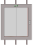
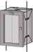

Schindler Integration Graphics Engineering
An object selected in System Browser, is displayed graphically with a graphic template, for example, an elevator; graphics engineering is not required in this case. You can, however, place the corresponding objects on a floor plan or on its own graphics page.
Creating a Graphics Structure
Set the hierarchy for saving graphics pages before starting to create graphics.
- System Manager is in Engineering mode.
- In System Browser, select Application View.
- Select Applications > Graphics and the tab Graphics.
- Click Create
 and select New Folder.
and select New Folder. - The Create new folder dialog box opens.
- Enter a name in the Name field.
NOTE: The system name is derived automatically from the description. Spaces are replaced by _ (underscore). - Click OK.
- Create additional folders or subfolders as per project requirements.
- The folder structure to save graphics pages is created.

Note:
Graphics pages can be moved afterwards under the Views tab.
Creating Floor Plan Page
- Click Add and select New Graphic.
- Click Save
 .
. - Applications > Graphics is selected.
- Select Applications > Graphics > [selected graphics hierarchy].
- Enter a unique name in the Name field.
- Click Save.
- Import an image or draw the building or the building's floor plan.
- Select the Start tab.
- In the Elements group box:
a. Click Import AutoCAD files .
.
b. Select the file.
c. Click Open.
- The floor plan is imported.
Create Floor Plan Page with Viewport
- The Start page is completed and open.
- In the Viewports group, select option Create Viewports
 .
. - Click Manual Viewport
 .
. - Create a viewport that is the same size as the graphics page.
- Click Save
 .
. - The viewport is saved below the corresponding graphics page and is displayed in System Browser.
- Select the Viewport page in System Browser.
- The Viewport properties dialog box opens.
- In System Browser, select Management View.
- Select either:
- Application View > Applications
- Logical View > Logical
- Logical View > User
- User View > User
- Own Views
and in Viewport Properties > Advanced, drag-and-drop the applicable folder to the Link References text field. This must take place for all existing views. - Close the Viewport Properties dialog box.
- The nodes for all views are linked to the Viewport. The Start page opens if the user selected one of these nodes.
NOTE:
When changing the Start page, the Start viewport must be re-saved.
Apply Graphic References
A symbol reference on the Start page must be created for each available view in System Browser.
- The Start page is created.
- Open the Start page in the Graphics Editor.
- In System Browser, select Application View.
- Drag-and-drop the Applications node to the graphics page.
- The folder symbol is added to the graphic and highlighted.
- Select Symbol Properties > Substitutions > Layout.
- Clear the Visible check box.
NOTE: The folder symbol is not visibly displayed in Online mode if the check box is cleared. - Repeat Steps 2 through 4 for all views available in System Browser (always the first node for the given view).
NOTE: The last view is saved for each user when exiting Desigo CC. This view is open on the top node of System Browser when logging on again to Desigo CC.
The reference to the graphics page must be added one time for each view since no one knows the view from which the user exits Desigo CC. - Click Save.
Adding Graphic Objects
- In System Browser, select logical view.
- Select Logical > [Hierarchies] >
- Building
- Group
- Elevator
- Elevator car
- Escalator
- Moving walks
- Drag the object to the graphics page.
- Click Save.
Graphical depiction on the floor plan | |||
2D | 2D+ | 3D | Description |
|
| Building | |
|
| Group elevator Group escalator
| |
|
| Elevator | |
 |  | Elevator car | |
|
| Escalator | |
|
| Moving walks | |